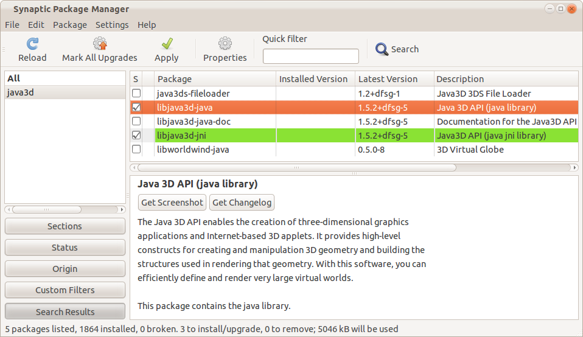
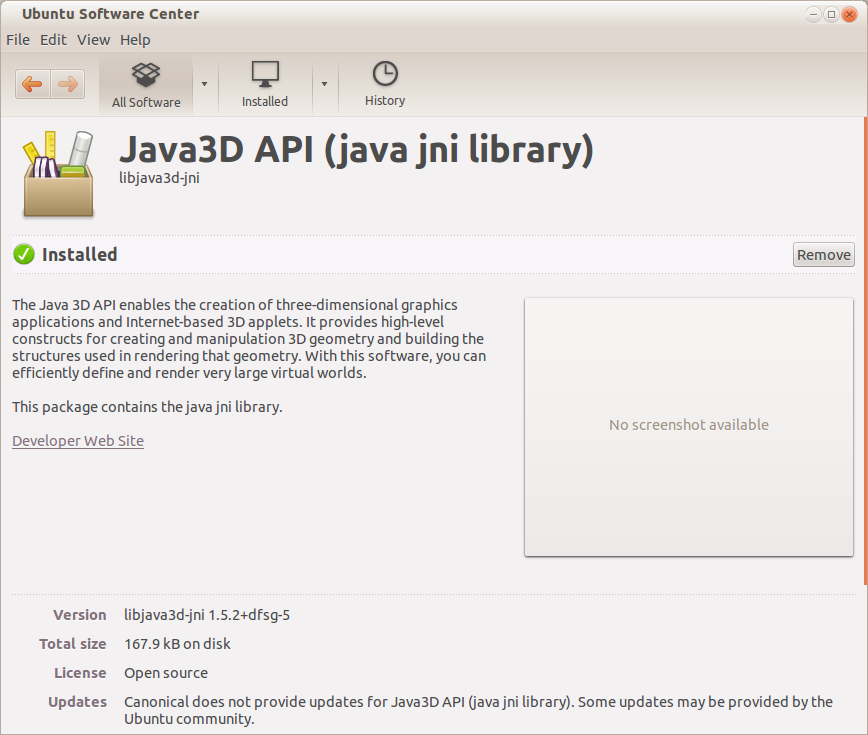

Ubuntu
Ubuntu 9.10:
Download Java3D from http://download.java.net/media/java3d/builds/release/1.5.2/j3d-1_5_2-linux-i586.zip
Extract the file, and extract the included j3d-jre.zip
In Eclipse, make sure yur build path has j3dcore.jar, j3dutils.jar, and vecmath.jar as external jar files

The files
- libj3dcore-ogl-cg.so
- libj3dcore-ogl.so
need to be in the library path. The simplest way to accomplish this is by simply copying those files into /lib:
| sudo cp <extracted path>/j3d-1_5_2-linux-i586/lib/i386/* /lib/ |
https://help.ubuntu.com/community/Java3dUbuntu
Ubuntu 11.10:
Install Java3D using the software center or synaptic package manager:

The package installer will install the library libj3dcore-ogl.so into the folder /usr/lib/jni/libj3dcore-ogl.so . When running an applet in a browser, the library may not be found in the library path. The simplest solution to this is to copy the library into the /lib folder:
| sudo cp /usr/lib/jni/libj3dcore-ogl.so /lib/ |
After restarting the browser, the applet should run Java3D.
Ubuntu 12.04:
Same as Ubuntu 11.10, install using software center or Synaptic.
